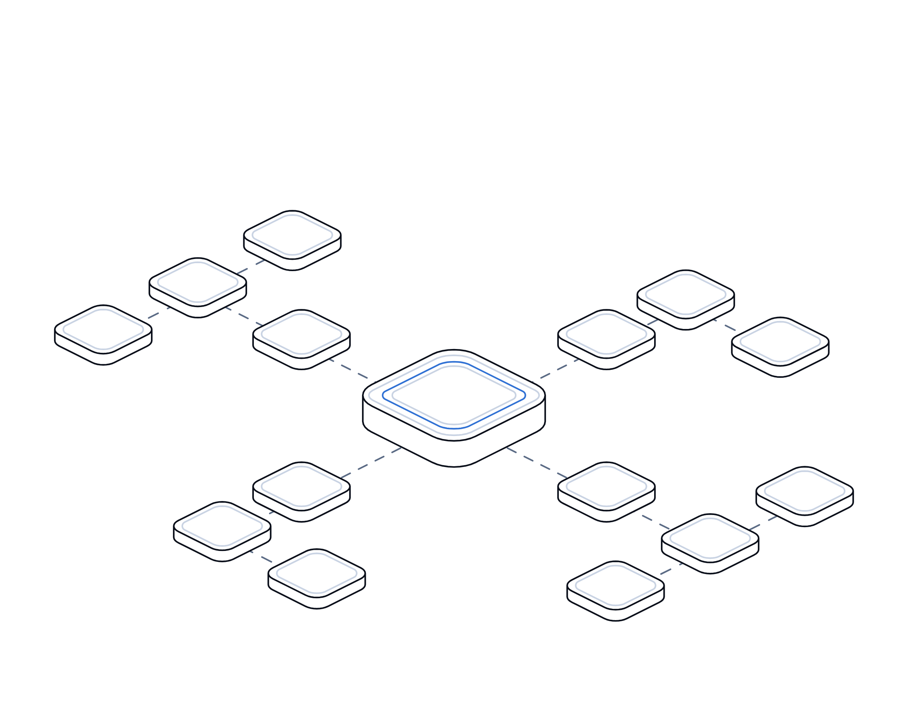

Your App, Their Voice

Intelligence report
No. 05 · November 2026
Intelligence report · Customer channels
Your app,
their voice.
In October 2026 attackers sent an "ASOS HACKED" alert to customers through the retailer's own app. What is confirmed, how these attacks work, and why every brand's messaging tools are now part of its attack surface.
Evidence-based analysis · Every figure sourcedtransputec.com
Inside
Contents
What happened when attackers used ASOS's own app to message its customers, what is confirmed and what is not, how channel hijacks work, and what UK organisations should do.
Executive summary03
Key findings04
At a glance05
Timeline06
01What happened07
02How channel hijacks work11
03Trust and the UK picture15
Sources22
Contents Your App, Their Voice · Hot Topics · Intelligence Report02 / 24
Executive summary
A private extortion demand, delivered to customers' lock screens
At around 10am on 6 October 2026, ASOS app users received an unauthorised push notification headed "ASOS HACKED".1,2 Addressed to the company's data protection officer and IT team, it claimed a Snowflake environment had been "fully compromised" and demanded engagement under threat of a leak.2 ASOS said it was investigating unauthorised activity involving third-party platforms it uses to communicate with customers, and its shares fell around 10% that day.1,3
ASOS first said basic personal information such as names and contact details may have been accessed.1 On 8 October it said an intruder had obtained an employee's login details by impersonating a trusted contact, then used them to reach information on certain third-party platforms.4,5 The BBC reported that a sample sent by the attackers included addresses, dates of birth, customer numbers and search history, and ASOS gave a fuller account after it was approached.6,7 Snowflake said the incident did not result from any weakness in its platform.8
The incident fits a pattern seen across 2026: attackers using social engineering to reach marketing and messaging platforms, then using a brand's own channels to extort it or defraud its customers.9 For UK organisations, the lesson is that every tool that can message customers belongs inside the security perimeter, and that incident communications must be ready before the first rogue message lands.
The bottom line
Your customer channels are only as secure as the least protected account on the platforms behind them. Inventory them, enforce strong sign-in and approvals, and prepare to tell customers the truth within hours.
Executive summary Your App, Their Voice · Hot Topics · Intelligence Report03 / 24
Key findings
Seven things this incident shows
01
The attack went public before the investigation began
Because the message reached customers directly, ASOS had to respond in public within hours. Lawyers noted this leaves little time to investigate before communicating.10
02
The route in was a person, not a vulnerability
ASOS said the intruder impersonated a trusted contact to get an employee's credentials.4 Snowflake said there was no flaw or misconfiguration in its service.8
03
Third-party communication platforms were the target
ASOS's own description points to platforms used to communicate with customers, not its core website or payment systems.1,5
04
Early statements understated the data involved
The first statement mentioned basic contact details. Two days later a fuller list emerged after the BBC reported seeing a data sample.1,6
05
Some important facts remain unconfirmed
ASOS has not said how many customers were affected or which platform sent the alert. The attackers' claim that a marketing platform was the route in is unverified.7,11
06
Regulators moved quickly on public advice
The NCSC told customers to assume they were affected. The ICO issued a statement the next day.12,13
07
This is a pattern, not a one-off
Betterment reported a similar abuse of a third-party marketing platform in January 2026, and credential-led attacks on SaaS platforms have been documented since 2024.9,14
Key findings Your App, Their Voice · Hot Topics · Intelligence Report04 / 24
At a glance
The incident in numbers
Key figures from company statements, regulators and reputable reporting. Some are preliminary.
~10am
Time on 6 October 2026 when ASOS said the unauthorised customer notification was sent.1
~10%
Fall in ASOS's share price on the day the incident was disclosed, according to Reuters.3
7
Types of personal data the BBC reported seeing in the attackers' sample, including dates of birth and search history.6
10m+
Google Play downloads of the ASOS Android app, as noted by the BBC. The number of affected customers has not been disclosed.15
72 hours
Deadline, where feasible, for notifying the ICO of a reportable personal data breach under UK GDPR.16
165
Organisations notified in the 2024 campaign that used stolen credentials against Snowflake customer accounts without MFA.14
 At a glance
At a glanceYour App, Their Voice · Hot Topics · Intelligence Report05 / 24
Timeline
From lock screen to fuller disclosure
Dated events from company statements, regulators and reporting. Attacker claims are labelled.
28 Sep 2026
Possible earlier activity (claimed)
A screenshot posted by the attackers shows a file dated 28 September, suggesting activity from at least that date. This is unverified.11
6 Oct, ~10am
Rogue push notification
ASOS app users receive "ASOS HACKED" with a demand and a Telegram link.1,2
6 Oct
Stock exchange statement
ASOS confirms unauthorised activity on third-party communication platforms and restricts access. Shares fall around 10%.1,3
6 Oct
NCSC advice; ICO not yet notified
The NCSC tells customers to assume they are affected. The ICO says it has not received a report at this stage.12,17
6 Oct, evening
Customer email
ASOS apologises by email and urges customers not to engage with related links.10
7 Oct
ICO statement
The ICO publishes a statement acknowledging how unsettling such messages are for the public.13
8 Oct
Cause and fuller data list
ASOS says an employee account was obtained by impersonation. The BBC reports a sample containing more than basic contact details.4,6
9 Oct
Snowflake statement
Snowflake says the issue did not result from any vulnerability, weakness, flaw or misconfiguration in its service.8
12 Oct
H&M investigates claims
H&M says it is investigating online claims reportedly linked to the same group, and has found no sign of compromise.18
Timeline Your App, Their Voice · Hot Topics · Intelligence Report06 / 24
01
Part 01
What
happened.
Separating what ASOS has confirmed from what attackers and commentators have claimed.
01The confirmed account
02Confirmed, claimed and unknown
03How the disclosure changed
Part 01 Your App, Their Voice · Hot Topics · Intelligence Report07 / 24
The confirmed account
One employee account, several platforms, millions of screens
ASOS said the intrusion began when someone impersonated a trusted contact. No software flaw has been identified.
The ASOS incident began, as far as the company has said, with a conversation rather than an exploit. In its 8 October update, ASOS said an unauthorised party gained access to an employee account "by impersonating a trusted contact to obtain log in credentials", and that those credentials were "used to access information on certain third-party platforms used by ASOS".4
The visible result came on 6 October. A push notification appeared on customers' phones, addressed not to them but to ASOS's data protection officer and IT team. It claimed the attackers had compromised a Snowflake instance and warned: "Engage with us, or we will leak it".2 In effect, the attackers used ASOS's own audience as a loudspeaker for their demand.
ASOS's first public statement, issued to the London Stock Exchange the same day, confirmed an unauthorised customer notification at around 10am and said the company had restricted access to the notification platforms and was working with specialist advisers and relevant authorities. It said it did not believe payment card information or account passwords were affected, and that the website and app were operating normally.1
The company has not said which platform sent the notification, and it is not known how the attackers reached the sending system.19 The attackers later told the BBC they had reached the data through Simon AI, a marketing platform that runs on Snowflake, but neither ASOS nor independent researchers have confirmed this.7,11 Snowflake said there was no vulnerability, weakness, flaw or misconfiguration in its service and no remediation was required for its customers.8
On 8 October ASOS apologised to customers for the notification and "any uncertainty this caused", said the affected platforms had been locked down, and said it had involved cyber specialists, law enforcement and regulators.5 It said customers needed to take no action on their accounts but should be wary of unexpected messages or calls claiming to be from ASOS.
Key gaps remain. ASOS has not disclosed how many customers were affected. The attackers reportedly set a two-week deadline, and the company did not say how it would respond.7
What happened Your App, Their Voice · Hot Topics · Intelligence Report08 / 24
Confirmed, claimed and unknown
What we know, and how we know it
Treat claims made by attackers as unverified until the company or investigators confirm them.
Topic
Confirmed by ASOS or others
Claimed, not confirmed
Still unknown
Entry point
Employee account obtained by impersonating a trusted contact.4
Access via a Snowflake-based marketing platform.11
Whether MFA was in place on that account.
Platforms
Third-party platforms used to communicate with customers.1
Attackers said a Snowflake instance was "fully compromised".2
Which platform sent the push alert.
Snowflake
Snowflake found no flaw in its platform.8
None beyond the attackers' message.
How the data store was reached.
Data
Names, contact details and certain account information.5
Fuller profiles in the BBC sample, not independently verified.4,6
How many customers are affected.
Payments
ASOS said no card data or passwords were accessed.5
Attackers also said payment data was not taken.2
None reported.
Regulator
The ICO had not received a report on 6 October.17
None.
Whether and when a formal report was made.
What happened Your App, Their Voice · Hot Topics · Intelligence Report09 / 24
How the disclosure changed
Day one versus day three
The story changed within 48 hours. Early statements in live incidents often do.
Cause
"Unauthorised activity involving third-party platforms that we use to communicate with customers."1
An employee account was obtained by someone impersonating a trusted contact.4
Data
"Basic personal information including name and contact details may have been accessed."1
Personal information such as names and contact details and "certain non-personal account related information". BBC reports a wider sample.5,6
Payments
Not believed to be affected.1
No payment card information or account passwords were accessed.5
Customer action
Do not engage with the notification or its link.10
No action needed on accounts. Be wary of unexpected messages and calls.5
Who pushed the update
ASOS, after attackers went public.
ASOS, after the BBC reported receiving a data sample.6
What happened Your App, Their Voice · Hot Topics · Intelligence Report10 / 24
02
Part 02
How it
works.
The general pattern behind attacks that turn a brand's own channels against it.
01The anatomy of a channel hijack
02Why marketing platforms are attractive
03Other cases
Part 02 Your App, Their Voice · Hot Topics · Intelligence Report11 / 24
General pattern
The anatomy of a channel hijack
This describes how such attacks typically work. It is not a confirmed account of the ASOS intrusion.

01
Get a foothold through a person
Phishing, phone calls posing as IT or a supplier, or passwords stolen by malware. In 2024 Mandiant traced a Snowflake campaign to infostealer credentials.14
02
Reach the SaaS platform
Marketing and data platforms are often reached with a username and password, without single sign-on, and sometimes without MFA.14
03
Take the data and the audience
The same platforms that store customer profiles can also send to them, so one login can deliver both data and reach.
04
Use the channel as leverage
A message to customers turns a private demand into public pressure, as at ASOS, or delivers fraud, as at Betterment.2,9
How it works Your App, Their Voice · Hot Topics · Intelligence Report12 / 24
Why marketing platforms
The soft spot between marketing and IT
A platform that can both store customer data and message customers gives one login two kinds of power.
Customer communication platforms have three features that attract attackers. They hold rich customer data, because personalisation needs it. They can send at scale, because that is their job. And they often sit outside the controls that protect core systems, because they were bought and configured by commercial teams.
The 2024 campaign against Snowflake customers showed how this plays out. Mandiant found no breach of Snowflake's own environment. Instead, the attackers used credentials stolen by infostealer malware, often from contractor devices, against accounts without multi-factor authentication, with passwords that had not been rotated and no network allow lists. Around 165 organisations were notified.14
In August 2025, Google reported that attackers had used stolen OAuth tokens for the Salesloft Drift integration to export data from Salesforce environments, between at least 8 and 18 August, before the tokens were revoked.20 The lesson there was that integrations can carry access for months without anyone looking at them.
The ASOS incident adds a further step. Instead of only taking data quietly and contacting the victim privately, the attackers used the platform's sending ability to reach customers directly. That gives an attacker leverage that a ransom email does not: every customer, journalist and investor learns of the incident at once.2,10
A security researcher quoted in reporting claimed that MFA is not required by default on the marketing platform the attackers named. That claim has not been confirmed and the provider had not commented publicly at the time of writing.11 Whether or not it applies here, default settings on SaaS tools deserve a review.
What most organisations get wrong is ownership. Marketing owns the platform, a supplier runs it, and IT assumes someone else checked the sign-in settings. The result is that a high-reach system ends up with weaker controls than an internal file share.
How it works Your App, Their Voice · Hot Topics · Intelligence Report13 / 24
Other cases
Brands' own channels used against them
Verified examples of the pattern. Details vary, and some investigations are ongoing.
Case
Channel abused
What happened
Source
ASOS, Oct 2026
App push via third-party platforms
Extortion demand sent to customers. Employee account obtained by impersonation.1,4
Company statements
Betterment, Jan 2026
Third-party marketing and communications platform
Fraudulent crypto offer sent to some customers after social engineering. Contact data and birthdates accessed.9
Company updates
Fast Company, Sep 2022
Apple News push notifications
Hacker breached internal systems and sent offensive notifications to readers.21
Reporting
Salesforce customers, Aug 2025
Connected app tokens
Stolen integration tokens used to export CRM data at scale.20
Google advisory
Snowflake customers, 2024
Data platform accounts without MFA
Stolen credentials used for data theft and extortion. About 165 organisations notified.14
Mandiant
How it works Your App, Their Voice · Hot Topics · Intelligence Report14 / 24
03
Part 03
Trust and
the UK.
Retail has been a prime target since 2025. What this means for customer trust and for UK organisations.
01The retail context
02The trust cost
03What it means for UK organisations
04Recommendations
Part 03 Your App, Their Voice · Hot Topics · Intelligence Report15 / 24
The retail context
Eighteen months of pressure on UK retail
Attackers have learned that customer trust is leverage. The channel that carries it is now a target.
ASOS was not the first UK retailer to face a damaging incident in this period. In spring 2025, Marks and Spencer estimated that a cyber attack would cost it around £300 million in operating profit for 2025/26 before mitigation.22 Co-op later confirmed that the personal data of all 6.5 million of its members had been taken.23
The Cyber Monitoring Centre estimated the combined financial impact of the M&S and Co-op incidents at between £270 million and £440 million.24 In July 2025 the National Crime Agency arrested four people aged 17 to 20 in connection with the attacks on M&S, Co-op and Harrods.25
In September 2025 Harrods said around 430,000 customer records had been taken from a third-party provider, a separate incident from an attempted intrusion earlier that year.26 The theme of supplier and third-party exposure runs through these cases.
In October 2026, days after the ASOS incident, H&M said it was investigating online claims of a potential cyber incident, reportedly linked to the same group. It said it had found no indication that its data environment had been compromised.18
The common elements are social engineering of staff or suppliers, large stores of customer data, and a high public profile. Retailers hold exactly the kind of data that fuels follow-up fraud: names, addresses, dates of birth and purchase behaviour.
What the ASOS case adds is a new form of pressure. Disruption and data theft are now joined by the public hijack of the brand's own voice.
Trust and the UK Your App, Their Voice · Hot Topics · Intelligence Report16 / 24
The trust cost
Four ways a hijacked channel damages trust
Harm extends well beyond the data itself.
Every customer hears it
A push alert reaches every device at once. Markets reacted within hours, with shares down around 10%.3
Doubt about genuine messages
Customers may ignore real alerts or, worse, trust fake ones. The NCSC warned that suspicious messages can arrive long after a breach.12
Statements are tested in public
When the media obtain data samples, any gap between early statements and the facts becomes the story.6
Faster legal exposure
Lawyers expect data protection claims, including group claims, may follow more quickly than usual when customers know from day one.10
Trust and the UK Your App, Their Voice · Hot Topics · Intelligence Report17 / 24
What it means for UK organisations
Five implications for UK boards and IT leaders
The question is simple: who, today, can send a message to all of your customers? Most organisations cannot answer it.
First, the perimeter now includes every platform that can message customers. Push services, email service providers, SMS gateways, customer data platforms and social media tools should be in the asset register, with named owners and the same sign-in standards as finance systems.
Second, social engineering of staff and suppliers remains the leading route in. ASOS, Betterment and the 2025 retail incidents all involved people being deceived.4,9 Phishing-resistant MFA, strict help desk verification and training on impersonation by trusted contacts matter more than any single tool.
Third, the UK GDPR clock does not wait for certainty. Controllers must notify the ICO without undue delay and, where feasible, within 72 hours of becoming aware of a personal data breach, unless it is unlikely to result in a risk to individuals. Processors must tell controllers without undue delay.16 Where the risk to individuals is high, they must be told directly without undue delay.27
Fourth, communications are part of the response, not an afterthought. In a channel hijack, the attacker tells customers first. Organisations need pre-approved holding statements, a way to update customers through trusted channels, and a habit of stating what is known and not yet known.
Fifth, supplier contracts and settings deserve fresh attention. Ask every messaging provider whether MFA or single sign-on can be enforced, what audit logs are available, and how fast they will notify you of an incident. Then check the settings yourself.
None of this requires new technology. It requires someone to own the question of who can speak to your customers, and to check the answer regularly.
Trust and the UK Your App, Their Voice · Hot Topics · Intelligence Report18 / 24
Recommendations
Six steps to take this quarter
Practical actions in priority order. The companion playbook gives owners and checks for each.
01
Inventory every customer channel
Every platform that can message customers, with owners, users and API keys.
02
Enforce strong sign-in on all of them
SSO where possible, MFA everywhere, and no leavers or stale agency logins.
03
Limit and approve mass sends
A few named senders, and a second approver for large sends.
04
Monitor the platforms
Alert on new admins, new keys, list exports and unusual send volumes.
05
Prepare to speak first
Draft holding statements and rehearse a rogue message, including the ICO assessment.
06
Question your suppliers
Confirm MFA enforcement, logging, breach notice timings and account change checks.
Trust and the UK Your App, Their Voice · Hot Topics · Intelligence Report19 / 24
For the board
Questions boards should ask now
Use these to test whether your organisation could cope with a channel hijack.
Exposure
?Which platforms can send a message to all of our customers, and who owns each?
?How many people and suppliers hold send rights or API keys for them?
?Are MFA and single sign-on enforced on every one?
Response
?How quickly could we stop a rogue message, and has anyone tested it?
?Do we have approved customer statements ready, and who signs them off?
?Who decides, within 72 hours, whether we report to the ICO?
Trust and the UK Your App, Their Voice · Hot Topics · Intelligence Report20 / 24
Glossary
Words worth knowing
Push notification
A message sent by an app to a phone's notification screen, usually through a third-party service.
Customer data platform
A system that gathers customer data and is often used to trigger personalised messages.
Snowflake
A cloud data platform used by many organisations to store and analyse data.
Social engineering
Deceiving people into giving access or information, for example by posing as a trusted contact.
Infostealer
Malware that collects saved passwords and session data from an infected device.
OAuth token
A credential that lets one application access another on a user's behalf.
MFA
Multi-factor authentication: a second check beyond a password at sign-in.
RNS
Regulatory News Service, used by listed companies to make stock exchange announcements.
Controller and processor
Under UK GDPR, the controller decides how personal data is used; the processor handles it on the controller's behalf.
Extortion
Demanding payment or engagement under threat, such as leaking stolen data.
Glossary Your App, Their Voice · Hot Topics · Intelligence Report21 / 24
Sources
Sources and notes
Sources were accessed in November 2026. Where reports differ, we say so in the text. Early reporting on live incidents can change.
1
ASOS plc, Update regarding cyber incident (RNS), 6 October 2026, https://www.investegate.co.uk/announcement/rns/asos--asc/update-regarding-cyber-incident-/9809595
2
Malwarebytes, ASOS "hackers" send push notifications to customers, 6 October 2026, https://www.malwarebytes.com/blog/news/2026/10/asos-hackers-send-push-notifications-to-customers
3
Reuters (syndicated), UK online retailer ASOS shares drop on hack reports, 6 October 2026, https://wtvbam.com/2026/10/06/uk-online-retailer-asos-shares-drop-on-hack-reports/
4
Infosecurity Magazine, ASOS confirms data breach linked to stolen employee credentials, 8 October 2026 (updated 9 October), https://www.infosecurity-magazine.com/news/asos-data-breach-stolen-employee/
5
LADbible, ASOS issues statement and explains how millions of customers got 'hack' message, 8 October 2026, https://www.ladbible.com/technology/asos-issues-statement-after-hack-message-shopping-925883-20261008
6
Silicon UK, Asos acknowledges theft of detailed customer data, 9 October 2026, https://www.silicon.co.uk/cybersecurity/asos-customer-data-631835
7
Malwarebytes, ASOS breach update: hackers stole customer details and shopping searches, 9 October 2026, https://www.malwarebytes.com/blog/data-breaches/2026/10/asos-breach-update-hackers-stole-customer-details-and-shopping-searches
8
Yahoo Finance UK (syndicated), Asos cyber breach not caused by vulnerability in our platform, says Snowflake, 9 October 2026, https://uk.finance.yahoo.com/news/asos-cyber-breach-not-caused-102151192.html
9
Betterment, Updates on Betterment January 9 security incident, January to March 2026, https://www.betterment.com/customer-update
10
Pinsent Masons Out-Law, ASOS cyber attack leaves UK businesses and customers reeling, 7 October 2026, https://www.pinsentmasons.com/out-law/news/asos-cyber-attack-leaves-uk-businesses-and-customers-reeling
11
BankInfoSecurity, Asos hackers claim breach of Snowflake-connected Simon AI, 9 October 2026, https://www.bankinfosecurity.com/asos-hackers-claim-breach-snowflake-connected-simon-ai-a-33056
12
National Cyber Security Centre, Incident affecting ASOS customers, 6 October 2026, https://www.ncsc.gov.uk/news/incident-affecting-asos-customers
13
Information Commissioner's Office, ASOS statement, 7 October 2026, https://ico.org.uk/about-the-ico/media-centre/news-and-blogs/2026/10/asos-statement/
14
Google Cloud (Mandiant), UNC5537 targets Snowflake customer instances for data theft and extortion, 10 June 2024, https://cloud.google.com/blog/topics/threat-intelligence/unc5537-snowflake-data-theft-extortion
Sources Your App, Their Voice · Hot Topics · Intelligence Report22 / 24
Sources
Sources and notes
Continued. Attacker claims are reported as claims. Several pages were read through syndicated or secondary reports where the original was not accessible.
15
Help Net Security, ASOS confirms data breach after "hacked" app alert reaches shoppers, 7 October 2026, https://www.helpnetsecurity.com/2026/10/07/asos-data-breach-app-notification/
16
legislation.gov.uk, UK GDPR Article 33: Notification of a personal data breach to the Commissioner, https://www.legislation.gov.uk/eur/2016/679/article/33
17
MLex, No Asos report of potential breach after app notification, UK ICO says, 6 October 2026, https://www.mlex.com/mlex/data-privacy-security/articles/2534427/no-asos-report-of-potential-breach-after-app-notification-uk-ico-says-update-
18
Drapers, H&M investigates potential cyber-attack, 12 October 2026, https://www.drapersonline.com/news/hm-investigates-potential-cyber-attack
19
TechCrunch, Asos confirms breach of customer data after hackers send rogue app notification, 8 October 2026, https://techcrunch.com/2026/10/08/asos-confirms-breach-of-customer-data-after-hackers-send-rogue-app-notification/
20
Google Threat Intelligence Group, Widespread data theft targets Salesforce instances via Salesloft Drift, August 2025, https://cloud.google.com/blog/topics/threat-intelligence/data-theft-salesforce-instances-via-salesloft-drift
21
TechCrunch, Hacker breaches Fast Company systems to send offensive Apple News notifications, 28 September 2022, https://techcrunch.com/2022/09/28/hacker-breaches-fast-company-systems-to-send-offensive-apple-news-notifications/
22
CNBC, M&S cyberattack to wipe out nearly one-third of annual profits, 21 May 2025, https://www.cnbc.com/2025/05/21/ms-cyberattack-to-wipe-out-nearly-one-third-of-annual-profits.html
23
TechCrunch, UK retail giant Co-op confirms hackers stole all 6.5 million customer records, 16 July 2025, https://techcrunch.com/2025/07/16/uk-retail-giant-co-op-confirms-hackers-stole-all-6-5-million-customer-records/
24
Security Affairs, The financial impact of Marks & Spencer and Co-op cyberattacks could reach £440M, June 2025, https://securityaffairs.com/179225/cyber-crime/the-financial-impact-of-marks-spencer-and-co-op-cyberattacks-could-reach-440m.html
25
Computing, Four arrested over M&S, Co-op and Harrods cyberattacks, July 2025, https://www.computing.co.uk/news/2025/security/four-arrested-over-m-s-co-op-and-harrods-cyberattacks
26
BleepingComputer, Harrods suffers new data breach exposing 430,000 customer records, September 2025, https://www.bleepingcomputer.com/news/security/harrods-suffers-new-data-breach-exposing-430-000-customer-records/
27
legislation.gov.uk, UK GDPR Article 34: Communication of a personal data breach to the data subject, https://www.legislation.gov.uk/eur/2016/679/article/34
Sources Your App, Their Voice · Hot Topics · Intelligence Report23 / 24
Who else can speak
for your brand?
We help UK organisations find and secure the platforms that reach their customers, monitor them for misuse and prepare incident communications that stand up to scrutiny.
Book a channel security reviewtransputec.com
Put it into practice
Playbook No. 05 · Guard your voice
Transputec · Hot Topics · Intelligence report No. 05